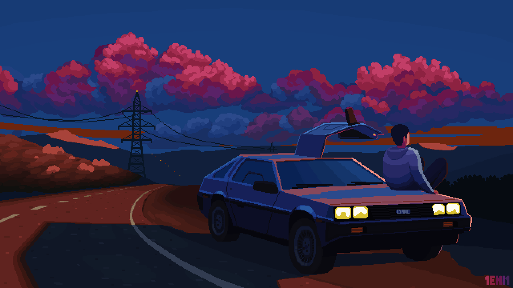

DeLorean Car
Published on Sep 25, 2024
Description of the GIF
The image shows a classic DeLorean car with a shiny silver body and unique gullwing doors that open upwards. It has a sleek and stylish design, making it stand out. The background enhances its features, highlighting the car's cool details. This picture captures the DeLorean's distinctive look and symbolizes adventure and innovation.
Image File Type Information
File Type: GIF
Why I Chose This GIF
I chose this image because the DeLorean is a very unique and cool car. Its shiny look and special doors really grab my attention. I love how it represents adventure and creativity, making me think of fun trips and exploring new places. This picture reminds me of the joy of discovering new things, which is why I wanted to share it.